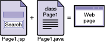

About Pages
See Also
A web application is made up of pages. A page consists of presentation elements
and programming logic.
- Presentation elements (JSP Page). The presentation
of a page is the definition of how it will appear when rendered in HTML. The presentation is coded in a JSP page. This page is the interface displayed to
the user and can include components and static
text. The JSP page is stored in a
.jsp file and is
called a page.
- Programming logic (Java Class).
The programming and business logic for your page is written in the Java language and is
typically stored in a
.java file called a page bean. This file can include
event handling and initialization logic for the page. By default, the programming and
business logic are in a single Java file.
The IDE automatically keeps the JSP page and the Java code in the page bean synchronized. For example, if you
make a change in the page bean's .java file, the change is reflected in the page's .jsp file.
The following illustration shows the parts of a page:

Viewing and Managing Pages
You can edit the visual representation of the page in the following
ways:
- In Design view. When the IDE creates a new page, the Visual
Designer opens in Design view. Drag components to the page in
Design view and work with them visually.
- In JSP view. At the top of the Visual Designer, click the
JSP button to view or edit the JSP source file for the page. The IDE generates the JSP code and maintains it as you make changes to component properties in Design view. Unless you want to perform an advanced function not supported by the Visual Designer, it is not likely that you will need to edit the JSP page directly.
For a page that is open the in the Visual designer, you can edit the page bean, the Java class that determines the page's behavior, as follows:
- Click the Java button at the top of the Visual Designer to open the page bean in the Java
Editor.
- See Also
- Web Application Tasks: Quick Reference
- Page Navigation Tasks: Quick Reference
- Component Tasks: Quick Reference
- About the Visual Designer
Legal Notices